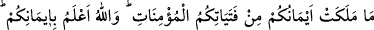
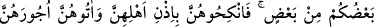
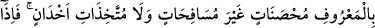
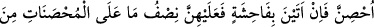

CÂRİYELERLE EVLENMEK
25- İçinizden, îmanlı hür kadınlarla evlenmeye gücü yetmeyen kimse, ellerinizin
altında bulunan îmanlı genç kızlarınız (sayılan) câriyelerinizden alsın. Allah sizin
îmânınızı daha iyi bilmektedir. Hep aynı köktensiniz (insanlık bakımından aranızda
fark yoktur). Öyle ise iffetli yaşamaları, zinâ etmemeleri ve gizli dost da
tutmamaları şartı ve sâhiplerinin izni ile onları (câriyeleri) nikâhlayıp alın,
mehirlerini de normal miktarda verin. Evlendikten sonra bir fuhuş yaparlarsa
onlara, hür kadınların cezâsının yarısı (uygulanır). Bu (câriye ile evlenme izni),
içinizden günâha düşmekten korkanlar içindir. Sabretmeniz ise sizin için daha
hayırlıdır. Allah çok bağışlayıcı ve esirgeyicidir.
“İçinizden, îmânlı hür kadınlarla evlenmeye gücü yetmeyen kimse”, âyetteki “gücü
yetmeyen”, maddi imkanı bulamayan demektir. Nitekim bir kimse “Hacca gücüm
yetmiyor.” der. Bunun mânâsı, haccetmek için maddî imkan bulamıyorum demektir.
Âyetteki “tavl”, kudret demektir.
“Muhsanât”tan maksat ise, cariyelere karşılık kullanılmasından anlaşıldığına göre
hür kadınlardır. Çünkü bunların hürriyetleri, kendilerini kölelik, hakirlik vb. kusur ve
noksanlık sıfatlarından korumaktadır. Buna göre mânâ şöyledir:
“Hür bir kadınla, yani hür ve müslüman bir kadınla evlenmek için maddi imkân
bulamayan kimse,” “ellerinizin altında bulunan” köle nev’inden “îmanlı genç
kızlarınız” sayılan kadın veya câriyelerinizden “alsın”, nikahlasın.
Aslında “fetât” genç kız, “fetâ” ise delikanlı demektir. Yaşça büyük bile olsa
câriyeye “genç kız”, köleye de “delikanlı” denir. Çünkü bunlar köle oldukları için
büyüklerde kullanılan saygı ifadeleri bunlarda kullanılmaz, bunlara küçükler gibi
muâmele edilir.
“Allah sizin îmânınızı daha iyi bilir.” Bu ifâde erkekleri câriye nikahlamaya alıştırıp